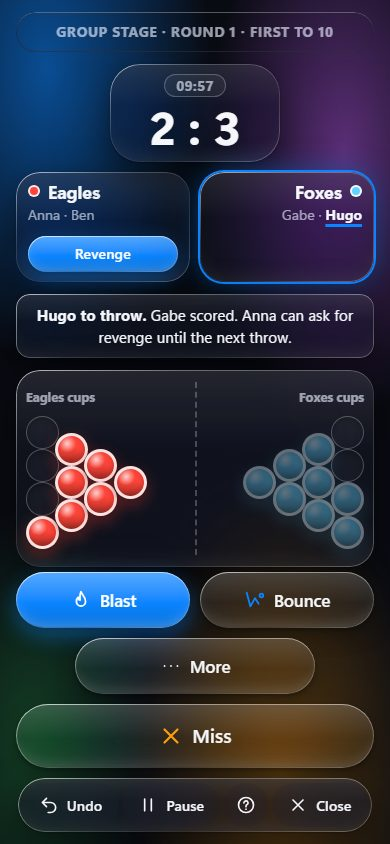
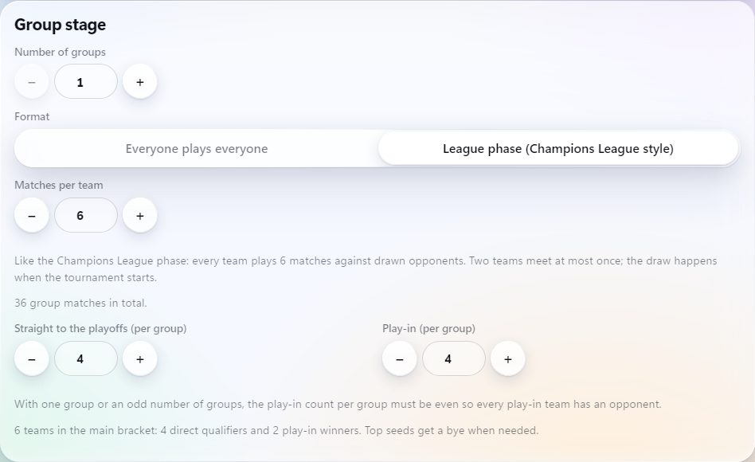
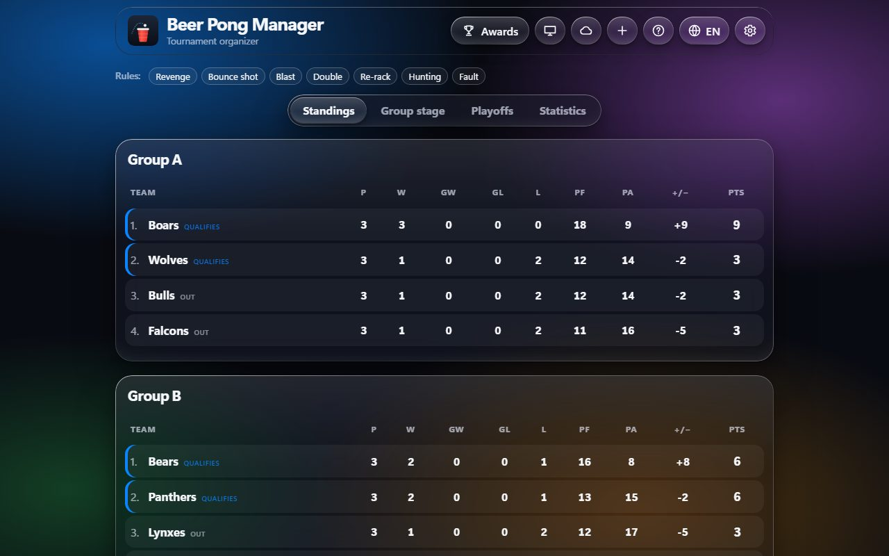
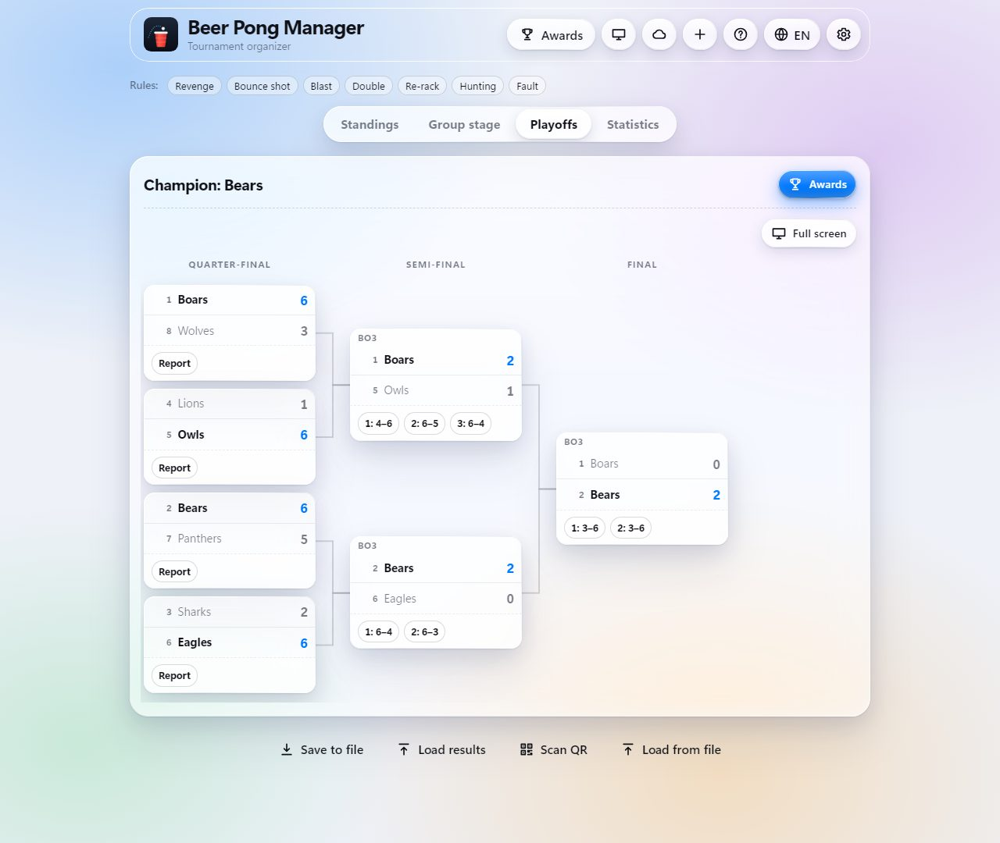
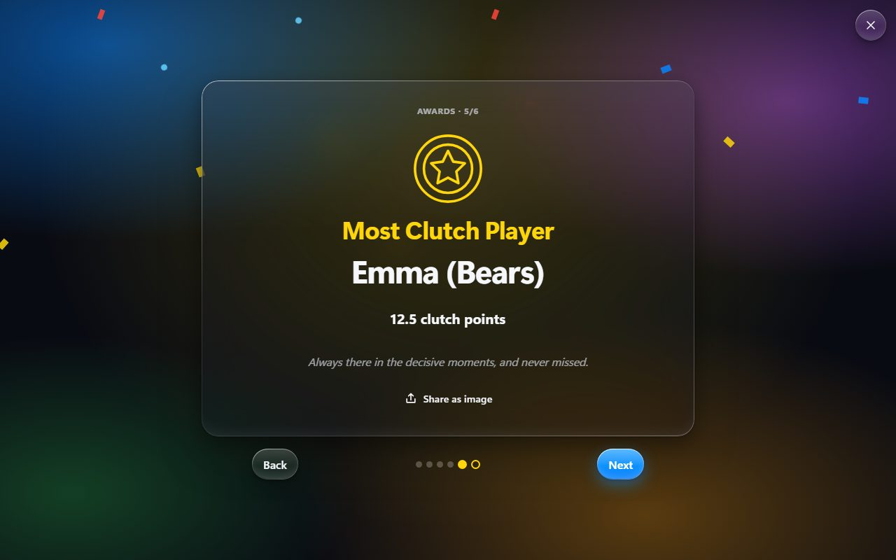
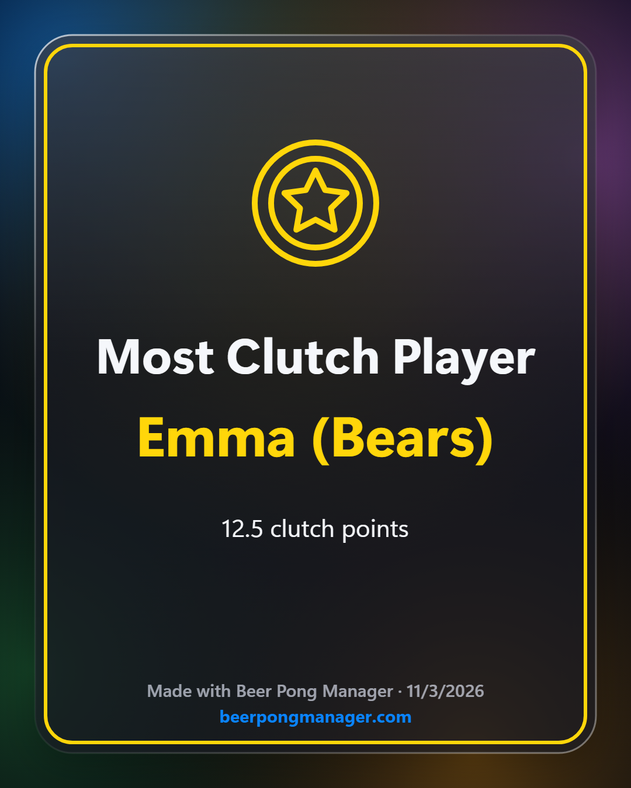
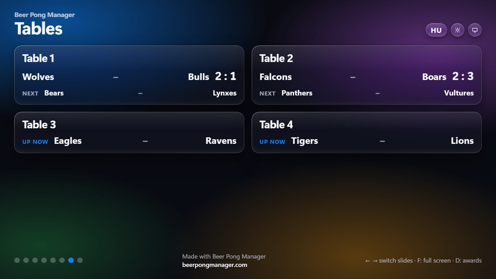
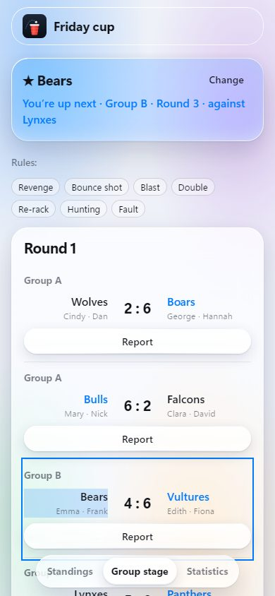
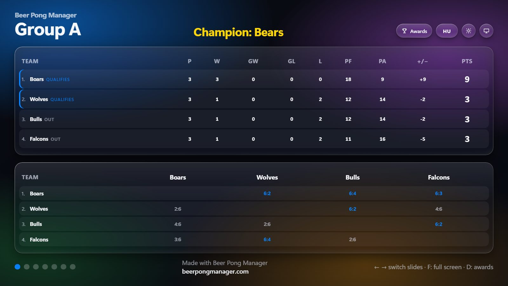
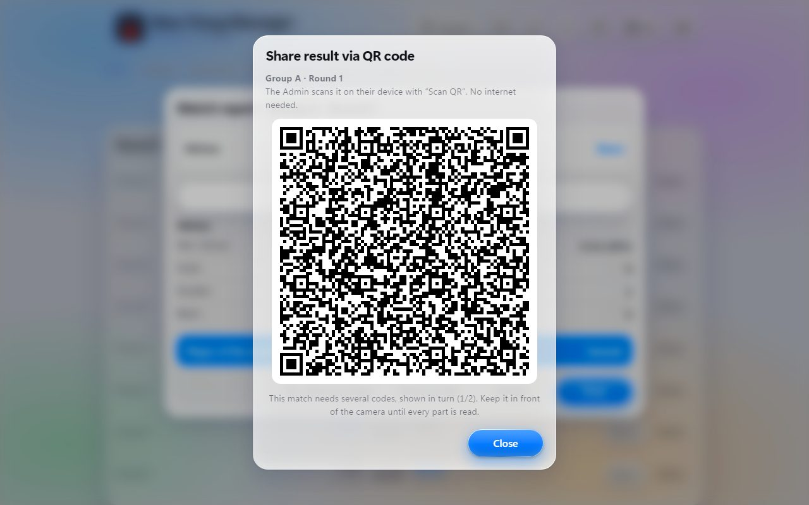

Tournament organizerTornaszervező
Beer Pong ManagerSörpong Manager
Run a whole beer pong tournament from your phone, from the entry list to the awards night. Egy teljes sörpong torna a telefonodról, a nevezéstől a díjátadóig.
Live scoring at the table, groups or a league phase, a seeded bracket, your own house rules, a projector view for the big screen and an awards gala. Free, and it works offline. Élő pontozás az asztalnál, csoportok vagy ligaszakasz, kiemeléses ágrajz, saját házi szabályok, kivetítő nézet és díjátadó gála. Ingyenes, és internet nélkül is működik.

Round robin, home-and-away or league phase · cup limit, time limit or both · Bo1 to Bo7 playoff series.Körmérkőzés, oda-vissza vagy ligaszakasz · pohárlimit, időlimit vagy mindkettő · Bo1–Bo7 rájátszás-párharcok.
What it doesMit tud?
Built for real tournaments with real house rules.Valódi tornákra, valódi házi szabályokkal.
Live scoringÉlő pontozás
Tap the cup that was hit. Score, throwing order, clock and special rules are tracked for you, with unlimited undo.Rábökök a lelőtt pohárra. Az állást, a dobósorrendet, az órát és a speciális szabályokat az app vezeti, korlátlan visszavonással.
Any formatBármilyen formátum
2 to 32 teams of 1 to 6 players with substitutes, groups or a Champions League-style league phase, play-ins, byes, and Bo1 to Bo7 series.2–32 csapat, csapatonként 1–6 játékos cserékkel, csoportok vagy BL-szerű ligaszakasz, play-in, erőnyerők, és Bo1–Bo7 párharcok.
Special rulesSpeciális szabályok
Seven optional rules, cup or time limits, golden goals and optional draws.Hét kapcsolható szabály, pohár- vagy időlimit, aranygól és választható döntetlen.
Your own house rulesSaját házi szabályok
Build any rule from simple blocks: when, if, then. Try it on a practice match before saving, give it a button for the scorer, or take one from the community gallery.Bármilyen szabály összerakható egyszerű elemekből: amikor, ha, akkor. Mentés előtt kipróbálhatod egy próbameccsen, kaphat gombot a pontozónak, vagy átvehetsz egyet a közösségi galériából.
Follow it liveÉlőben követhető
Share a link and everyone follows the tournament on their phone, every throw as it happens, without an account. Players pick their team and are told when it is up.Megosztasz egy linket, és mindenki a telefonján követi a tornát, dobásról dobásra, fiók nélkül. A játékosok kiválasztják a csapatukat, és szól nekik, ha jönnek.
Teams that changeVáltozó csapatok
Bring a substitute in, fix a typo, take a player out or move one to another team mid-tournament. A player who comes back keeps their statistics.Torna közben beállíthatsz cserét, javíthatsz elírást, kivehetsz vagy másik csapatba vihetsz egy játékost. Aki visszatér, viszi a statisztikáját.
Statistics and awardsStatisztika és díjátadó
Top scorers, cups per match, accuracy, hits in a row and throw tempo, with fair tie-breaks. At the end, six awards revealed one by one up to the Most Clutch Player, each shareable as an image.Pontdobók, pohár/meccs, pontosság, találatsorozat és dobási tempó, igazságos sorrenddel egyenlőségnél. A végén hat díj, egyenként felfedve A Torna Kuplungjáig, mindegyik megosztható képként.
Game day toolsHelyszíni eszközök
Many tables at once with a next-up queue, scorer phones online, a watch for tables that stall, a projector view, and results passed by QR code.Sok asztal egyszerre, „ki következik” sorral, online pontozó telefonok, figyelő az elakadt asztalokra, kivetítő nézet és QR-kódos eredményátadás.
Runs anywhereBárhol fut
In any browser (installable as an app) and as an Android app, with automatic updates. No account and no internet needed; signing in only adds the online extras.Bármely böngészőben (appként telepíthető) és Android-appként, automatikus frissítéssel. Fiók és internet nélkül is működik; belépni csak az online extrákhoz kell.
A tourKörbevezetés
Every screenshot is taken from the real app, in its default Liquid Glass theme (three more themes are built in).Minden kép a valódi alkalmazásról készült, az alapértelmezett Üveg (Liquid Glass) témában (még három téma választható).
SetupBeállítás
Shape the tournamentFormáld a tornát
Enter teams with their substitutes, or draw random teams. Choose match length, groups (random or drag and drop), a league phase, direct places and play-ins, and the series length of every round.Add meg a csapatokat a cseréikkel, vagy sorsolj csapatokat. Állítsd be a meccshosszt, a csoportokat (sorsolva vagy áthúzással), a ligaszakaszt, a továbbjutást és a párharcok hosszát.
Only valid combinations can be picked, and a bracket preview updates as you go.Csak érvényes beállítás választható, és az ágrajz előnézete közben frissül.

Group stageAlapszakasz
Standings after every throwTabella minden dobás után
Tables update live, with head-to-head and cup ratio as tiebreakers. Every match has a full report.A tabella élőben frissül, holtversenynél az egymás elleni eredmény és a pohárarány dönt. Minden meccsről részletes jegyzőkönyv készül.

PlayoffsRájátszás
A bracket that fills itself inAz ágrajz magától kitöltődik
When the groups end, seeds are fixed and the bracket builds itself, with byes and best-of series.A csoportkör végén rögzül a kiemelés, és felépül az ágrajz, erőnyerőkkel és párharc-sorozatokkal.

AwardsDíjátadó
The Most Clutch PlayerA Torna Kuplungja (Torna MVP)
Clutch points come from match-deciding hits, revenges, bounce shots and hunts. They stay hidden until the gala, where the player who delivered under pressure is crowned.Kuplung pont jár a meccsdöntő találatokért, revansokért, pattintásokért és vadászatokért. A gáláig rejtve marad, ott derül ki, ki bírta a nyomást a legjobban.
Every award can be shared as an image.Minden díj megosztható képként.


Game dayVersenynap
Ten tables at onceTíz asztal egyszerre
Tell the app how many tables you have. Each free table gets the next match, no team is ever called to two tables, and the projector shows what is on and what comes next. Scorer phones join with a link and take their table's match.Megadod, hány asztal van. Minden szabad asztal megkapja a következő meccset, egy csapatot sosem hív két asztalhoz, a kivetítő pedig mutatja, mi megy és mi következik. A pontozó telefonok egy linkkel csatlakoznak, és az asztaluk meccsét kapják.
A table that hasn't moved for three minutes is flagged for the organizer, who can take the match over.Ha egy asztalnál három perce nem dobtak, a szervező jelzést kap, és átveheti a meccset.

For the playersA játékosoknak
Follow your teamKövesd a csapatod
On the viewer link, a player picks their team once. Its matches and standings row stand out, and a banner (and a notification, if allowed) says when it is up.A nézői linken a játékos egyszer kiválasztja a csapatát. A meccsei és a tabellasora kiemelve jelennek meg, egy sáv (és ha engedi, értesítés) pedig szól, ha jönnek.

Big screenKivetítő
Projector viewKivetítő nézet
In the browser, open a second window on the projector or TV. It cycles through the standings, live matches, the tables, the statistics and the bracket, and follows the scorers live.A böngészőben nyiss egy második ablakot a kivetítőn vagy a tévén. Váltakozva mutatja a tabellákat, az élő meccseket, az asztalokat, a statisztikát és az ágrajzat, élőben követve.

Several devicesTöbb eszköz
Pass results by QR codeEredmény QR-kóddal
Match managers score on their own phones. Results come back by file or by scanning a QR code, with no internet. If two devices recorded a match differently, the organizer chooses which version stays.A meccsfelelősök a saját telefonjukon pontoznak. Az eredmény fájlban vagy QR-kóddal jön vissza, internet nélkül. Ha két eszközön máshogy rögzítettek egy meccset, a szervező választ.

The rulesA szabályok
Each special rule can be switched on or off per tournament.Minden speciális szabály tornánként ki-be kapcsolható.
Base gameAlapjáték
10 cups a side, first to 10 (or your cup limit), with an optional time limit. A level score when time runs out goes to a golden goal, or a draw in the group stage.Oldalanként 10 pohár, 10 pontig (vagy a beállított pohárlimitig), választható időlimittel. Lejárt időnél egyenlő állásnál aranygól dönt, a csoportkörben lehet döntetlen is.
| RuleSzabály | WhenMikor | What happensMi történik |
|---|---|---|
| RevengeRevans | After a hit, the opponent in the same position shoots back.Találat után az ellenfél ugyanabban a pozícióban visszadob. | The last shot landed wins one point and one cup. Counters allowed, once per team per match.Az utolsó sikeres dobás nyer: egy pont, egy pohár. Ellen-revans is lehet, csapatonként meccsenként egyszer. |
| Bounce shotPattintás | The ball bounces off the table into a cup.A labda az asztalról pattanva megy a pohárba. | The thrower picks one more cup. No revenge against it.A dobó még egy poharat választ. Ellene nincs revans. |
| BlastRobbantás | The second thrower sinks the first one's cup.A második dobó ugyanabba a pohárba talál. | +1 point for the thrower and 2 more cups for the team.+1 pont a dobónak és még 2 pohár a csapatnak. |
| DoubleDupla | Both throwers hit different cups in one turn.Egy körben mindkét dobó más-más pohárba talál. | The team throws again.A csapat újra dob. |
| Re-rackRendezés | Asked at the start of a turn.Kör elején kérhető. | The opponent's cups are rearranged, at most twice a match.Az ellenfél poharai új helyre kerülnek, meccsenként legfeljebb kétszer. |
| HuntingVadászat | A defender's hand over the table gets hit.Eltalálják a védekező asztal fölé lógó kezét. | The hunter picks 2 cups.A vadász 2 poharat választ. |
| Fault | A player knocks over their own cup.Egy játékos leveri a saját poharát. | The knocked-over cups count for the opponent.A levert poharak az ellenfélnek érnek pontot. |
Get itHogyan kapod meg?
Android
APKAPK
Install the APK on your phone. It offers new versions by itself.Telepítsd az APK-t a telefonodra. Az új verziókat magától felajánlja.
Download the APKAPK letöltéseComputer & browserGép és böngésző
PWA
Runs in any modern browser, on phones and computers, installs like an app and works offline.Bármely modern böngészőben fut, telefonon és gépen is, appként telepíthető, és offline is működik.
Open the appMegnyitom az appotReleases: beerpong-manager-releases on GitHub.Kiadások: beerpong-manager-releases a GitHubon.